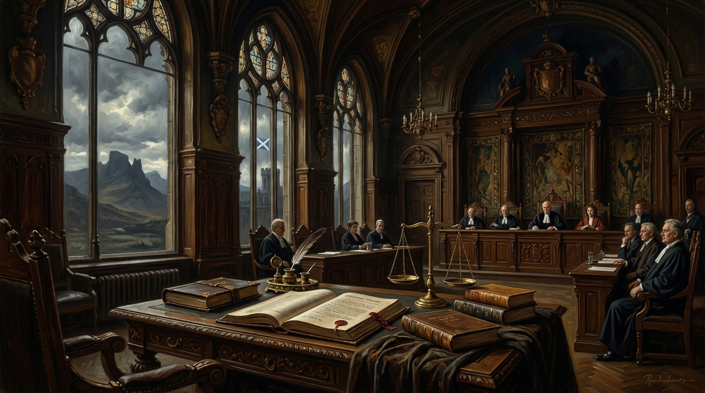

The International-Law Framework Potentially Applicable to Scotland’s Claim to Self-Determination
A Jurisprudential Memorandum on Treaty Sources, the [2022] UKSC 31 Domestic Impasse, Montevideo Statehood Criteria, and the Advisory Jurisdiction of the International Court of Justice.

“This memorandum sets out the international-law principles relevant to Scotland’s constitutional position, with reference to recognised sources, judicial decisions, and established doctrine. It does not assert that Scotland possesses a right to independence. It identifies the legal materials that could be relied upon by counsel seeking to frame Scotland’s situation within existing international-law categories.” — Trevor Swistchew
The Sovereign Jurisprudence Matrix
Treaty Frameworks, UKSC 31 Domestic Impasse & ICJ Advisory PathwaysThe International Self-Determination Doctrine & ICJ Precedents
Scotland is a constituent nation of the United Kingdom. Its internal governance is defined by the Scotland Act 1998. The UK Supreme Court has held that the Scottish Parliament lacks competence to legislate for a referendum on independence, as such legislation “relates to” the Union and the UK Parliament, both reserved matters (Reference by the Lord Advocate [2022] UKSC 31). This judgment is authoritative and establishes that Scotland cannot unilaterally initiate a domestic process to test the will of its population regarding independence.
This is relevant because international law examines whether internal self‑determination is meaningfully available within the parent state. The Supreme Court’s judgment is a primary source demonstrating the limits of Scotland’s internal constitutional autonomy.
The right of self‑determination is recognised in Article 1 of the UN Charter, Article 1 of the International Covenant on Civil and Political Rights (ICCPR), and Article 1 of the International Covenant on Economic, Social and Cultural Rights (ICESCR). The doctrine is further elaborated in UN General Assembly Resolutions 1514 (XV) and 1541 (XV), and has been applied by the International Court of Justice (ICJ) in advisory opinions including Namibia (1971), Western Sahara (1975), and Chagos (2019).
The clearest application of external self‑determination concerns colonial and non‑self‑governing territories. Scotland is not listed by the UN as a Non‑Self‑Governing Territory. Therefore, Scotland does not fall within the automatic decolonisation framework.
However, contemporary scholarship (e.g., Skoutaris, Secession and the Right to Self‑Determination in International Law, 2021) notes that international law provides limited guidance for claims arising within democratic states that are neither colonial nor occupied. The ICJ has acknowledged that self‑determination is a “continuing right” (East Timor, 1995), but has not defined a mechanism for non‑colonial secession.
International law distinguishes between internal self‑determination (meaningful political participation and autonomy within the parent state) and external self‑determination (statehood). The Supreme Court’s 2022 judgment is relevant because it demonstrates that Scotland cannot unilaterally initiate a process to determine its constitutional future. Counsel may argue that this constitutes a limitation on internal self‑determination. Whether such limitation is sufficient to trigger external self‑determination is not settled in international law.
The ICJ does not grant independence. It adjudicates disputes between states and provides advisory opinions to UN organs. For Scotland to appear before the ICJ, one of two routes would be required:
- A dispute between Scotland (or an entity purporting to represent Scotland) and the United Kingdom, accepted by both parties under Article 36 of the ICJ Statute.
- A request for an advisory opinion from the UN General Assembly or Security Council under Article 65 of the ICJ Statute.
The second route is more realistic. Advisory opinions have been used to clarify the legal status of territories (Namibia, Western Sahara, Chagos). To obtain such an opinion, Scotland would need to persuade a UN organ that a legal question exists concerning the UK’s compliance with its international obligations regarding self‑determination.
The UK Government has previously commissioned international‑law advice on Scottish independence (Crawford & Boyle, Referendum on the Independence of Scotland: International Law Aspects, 2013). This opinion states that, in the event of independence, the remainder of the UK would likely be treated as the continuator state, and Scotland as a new state. This is consistent with state practice.
This opinion does not address the legality of Scotland’s path to independence. It is relevant because it demonstrates that the UK accepts that Scottish independence is legally possible and has analysed its consequences under international law.
Counsel seeking to frame Scotland’s situation within international law would rely on the following propositions, each grounded in recognised doctrine:
Limitations and Risks
International law does not provide a clear, automatic path for non‑colonial secession. The ICJ has never recognised a right of unilateral secession for a region within a democratic state. Any argument advanced by Scotland would be novel and would rely on extending existing doctrine. Counsel must acknowledge this.
Conclusion
The international‑law route for Scotland is not a guaranteed path to independence. It is a legal strategy grounded in recognised doctrine, judicial decisions, and state practice. It relies on demonstrating that Scotland’s internal self‑determination is constrained and that a legal question exists regarding the UK’s compliance with its international obligations. The ICJ could be engaged only through a UN organ requesting an advisory opinion. This memorandum sets out the factual and doctrinal basis for such an argument without asserting outcomes.